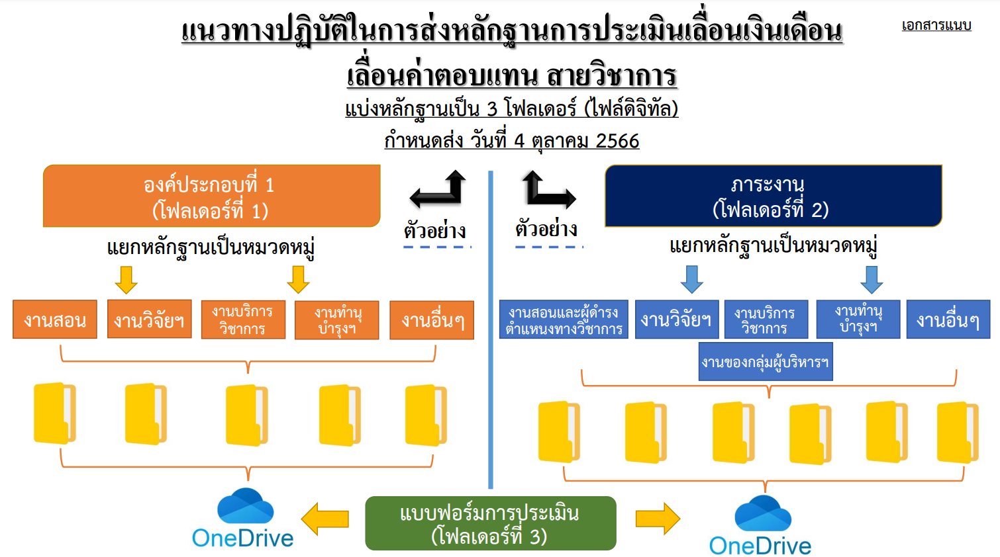
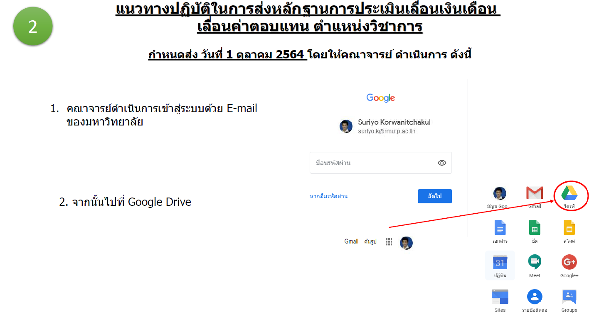
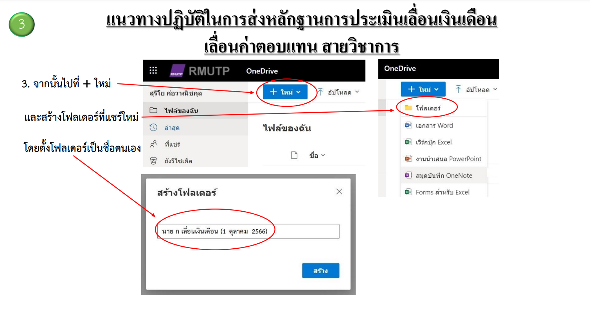
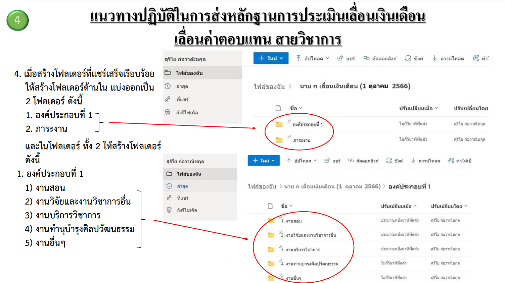
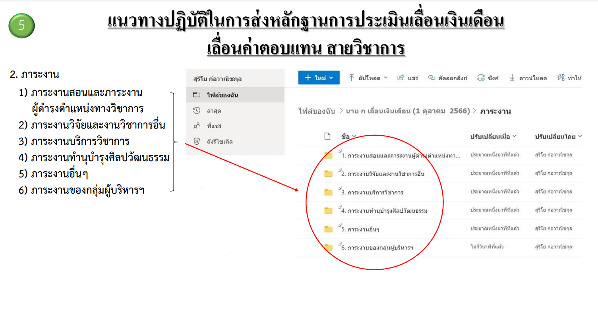
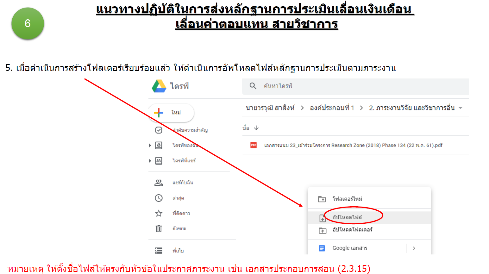
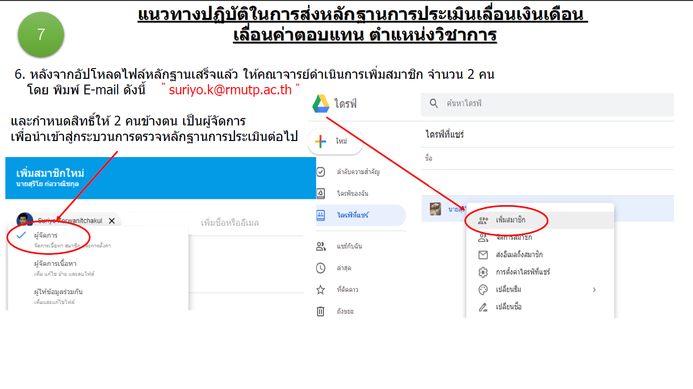

ภาระงานบุคลากรสายวิชาการ
สายวิชาการ
แนวทางปฏิบัติในการส่งหลักฐานการประเมินเลื่อนเงินเดือน เลื่อนค่าตอบแทนสายวิชาการ
การประเมินผลสัมฤทธิ์ของงานของข้าราชการและพนักงานมหาวิทยาลัย (องค์ประกอบที่ 1) ตำแหน่งวิชาการ
หลักเกณฑ์และวิธีการคำนวณภาระงานขั้นต่ำ
เอกสารประกอบ
สายสนับสนุน
แนวทางปฏิบัติในการส่งหลักฐานการประเมินเลื่อนเงินเดือน เลื่อนค่าตอบแทนสายสนับสนุน
การประเมินผลสัมฤทธิ์ของงานของพนักงานมหาวิทยาลัย (องค์ประกอบที่ 1) สายสนับสนุน
หลักเกณฑ์และวิธีการคำนวณภาระงานของบุคลากรสายสนับสนุน
เอกสารประกอบ
ภาระงานบุคลากรสายวิชาการ
แนวทางปฏิบัติในการส่งหลักฐานการประเมินเลื่อนเงินเดือน เลื่อนค่าตอบแทนสายวิชาการ
View page source
แนวทางปฏิบัติในการส่งหลักฐานการประเมินเลื่อนเงินเดือน เลื่อนค่าตอบแทนสายวิชาการ
pdf
(ดาวน์โหลดไฟล์ pdf)
      